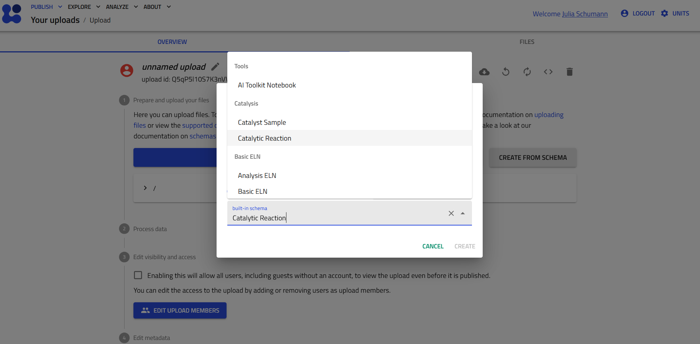
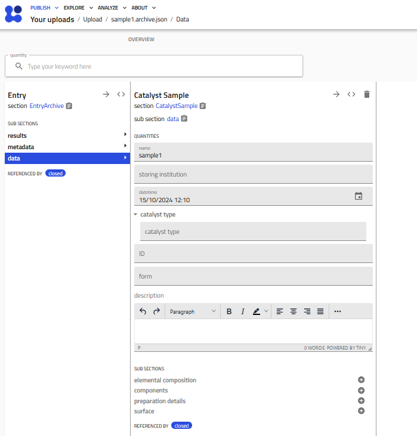
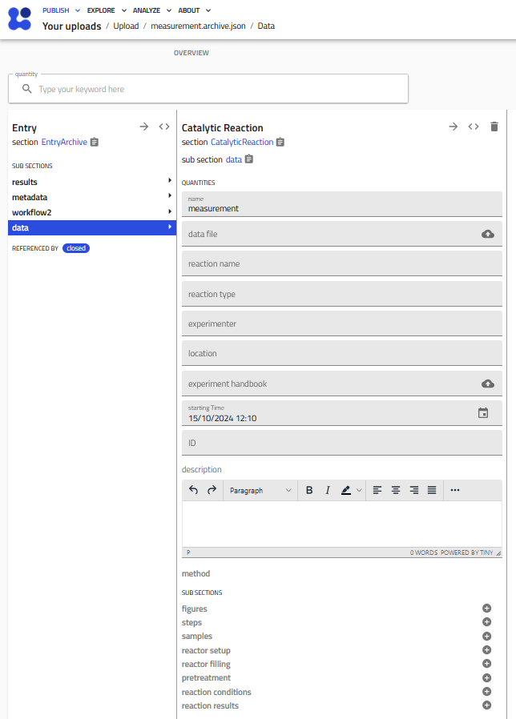

How to Create Catalysis Entries¶
To create one or more entries in NOMAD through the browser, the user first has to navigate to the “PUBLISH” tab, log into their account (if applicable), then click “CREATE A NEW UPLOAD”. Here, there are 4 main ways to create catalysis entries in the NOMAD / NOMAD Oasis:
- using the catalysis parser functionality by uploading template conform tables (in csv or xlsx format)
- manually via the graphical user interface (GUI) using NOMADs ELN functionality
- dropping archive.json files directly in an upload
- using the tabular parser, for creating more customized entries and when the data has already been collected in csv or xlsx files
First, I will detail how to create entries using the excel parser and explain the structure of the schemas. Later I will add, how to add larger datasets more quickly.
1. Using the catalysis parser¶
The easiest way to generate a number of entries at once is by dropping tabular files (csv/xlsx), which adhere to a provided template format and naming convention into an upload in NOMAD. Templates are provided in the following to generate one or more sample entries from a *CatalystSampleCollection.xlsx file, one or more catalytic measurements in *CatalyticReactionCollection.xlsx file, or for both sample and measurement data in one file as a *CatalysisCollection.xlsx file. Note that when generating sample and measurement entries in one step, the upload needs to be reprocessed to resolve the references correctly. For catalytic reactions with e.g. longer time or measurement series one can also upload a *CatalyticReaction.xlsx file directly, or specify the reaction file in a datafile column of a *Collection.xlsx file to add multiple entries at once. Then there are no restrictions on the file name. (For all purposes mentioned here, csv files should work the same as xlsx files.)
2. Manual creation of entries from the GUI¶
When creating single entries, it may be easiest to manually fill the schemas in the GUI. In the Create from Schema pop-up window one can select a built-in schema from the EntryData Category Catalysis. After entering a unique name for the entry (unique at least within the upload folder) one can create an instance of the selected schema, either a catalyst sample entry or a measurement of a functional catalyst analysis.

The Catalyst Sample schema¶
Below you see a fresh instance of a Catalyst Sample entry, which can be filled directly in the GUI. 
The Catalytic Reaction schema¶
Here you see a screenshot of an empty Catalytic Reaction measurement entry. 
Populate the CatalyticReaction schema from a data file¶
Currently two types of data files are recognized in the data_file quantity and information
is extracted directly to populate the CatalyticReaction schema.
The first type is an excel or csv table, and as long as the column headers follow some
guidelines, the data can be extracted by NOMAD. The format originated from the clean
data project and has been extended to allow a bit more flexibility of the input format.
The second supported file type is a hdf5 file, as it is currently produced by the Haber Reactor at the
Inorganic Chemistry Department of the Fritz-Haber-Institute and was presented in the
publication Advancing catalysis research through FAIR data principles implemented in a
local data infrastructure - a case study of an automated test reactor
Format of the csv or xlsx data file:¶
For excel files with multiple sheets, only the first sheet is read. If a column is empty, it will be ignored.
The following column headers will be recognized and mapped into the NOMAD schema:
| excel column header | description | schema quantity |
|---|---|---|
catalyst |
name of the catalyst | reactor_filling.catalyst_name |
sample_id or FHI-ID |
(unique) identification number of catalyst sample | sample[0].lab_id |
mass (mg) or mass (g) |
catalyst mass in the reactor | reactor_filling.catalyst_mass |
TOS (*unit*) or time (*unit*) |
time on stream, unit can be s or min or h | reaction_conditions.time_on_stream, results[0].time_on_stream |
step |
number of reported measurement point | reaction_conditions.runs, results[0].runs |
x {reagent_name} or x {reagent_name} (%) |
concentration of reagents at the inlet of the reactor; if in % it will be converted into a fraction, if for that reagent also a conversion is specified, it will also appear in results | reaction_conditions.reagents[].name, reaction_conditions.reagents[].fraction_in; (results.reactants_conversion[].fraction_in/name) |
x_out {name} (%) |
concentration of reagents or products at the outlet of the reactor | results[0].reactants_conversions[].name/fraction_out or results[0].products[].name/fraction_out |
set_temperature (*unit*) |
desired or set reactor temperature | reaction_conditions.set_temperature |
temperature (*unit*) |
reactor temperature, if unit is not K or Kelvin, degree Celsius is assumed | results[0].temperature |
C-balance |
carbon-balance | results[0].c_balance |
GHSV *unit* |
Gas Hourly Space Velocity, unit can be 1/h or h^-1 | reaction_conditions.gas_hourly_space_velocity |
WHSV *unit* |
Weight Hourly Space Velocity, unit can be ml/g/h or ml/(g*h) | reaction_conditions.weight_hourly_space_velocity |
Vflow (*unit*) or flow_rate (*unit) |
set total gas flow rate, unit can be ml/min or mln | reaction_conditions.set_total_flow_rate |
set_pressure (*unit*) |
set reactor pressure | reaction_conditions.set_pressure |
pressure (*unit*) |
reactor pressure | results[0].pressure |
r {name} *unit* |
reaction rate of reactant or product with name and unit mol/(g*h) or equivalent (mmol,µmol, minute or s also accepted) | results[0].rates[].reaction_rate |
x_p {name} (%) |
product based conversion of reactant name in % | results[0].reactants_conversions[].conversion_product_based |
x_r {name} (%) |
reactant based conversion of reactant name in % | results[0].reactants_conversions[].conversion_product_based |
y {name} (%) |
product yield of product name | results[0].products[].product_yield |
S_p {name} (%) |
selectivity of product name in % | results[0].products[].selectivity |
Structure of the hf5 data file:¶
- 'Header'
- methodename
- 'Header'
- 'Header'
- methodename
- 'Raw Data'
- 'Sorted Data'
- methodname
- 'H2 Reduction'
- 'NH3 Decomposition'
- methodname
| hf5 location and label | CatalyticReaction schema |
|---|---|
| #### Header | |
| ['Header']['Header']['SampleID'][0] | lab_id |
| ['Header'][methodname]['Header']: | |
| - ['Bulk volume [mln]'] | reactor_setup.reactor_volume |
| - ['Inner diameter of reactor (D) [mm]'] | reactor_setup.reactor_diameter |
| - ['Diluent material'][0].decode | reactor_filling.diluent |
| - ['Diluent Sieve fraction high [um]'] | reactor_filling.diluent_sievefraction_upper_limit |
| - ['Diluent Sieve fraction low [um]'] | reactor_filling.diluent_sievefraction_lower_limit |
| - ['Catalyst Mass [mg]'][0] | reactor_filling.catalyst_mass |
| - ['Sieve fraction high [um]'] | reactor_filling.catalyst_sievefraction_upper_limit |
| - ['Sieve fraction low [um]'] | reactor_filling.catalyst_sievefraction_lower_limit |
| - ['Particle size (Dp) [mm]'] | reactor_filling.particle_size |
| - ['User'][0].decode() | experimenter |
| - ['Temporal resolution [Hz]'] | reaction_conditions.sampling_frequency |
| #### ['Sorted Data'][methodname]['H2 Reduction'] | |
| ['Catalyst Temperature [C°]'] * ureg.celsius | pretreatment.set_temperature |
| ['Massflow3 (H2) Target Calculated Realtime Value [mln|min]'] | pretreatment.reagent[0].flow_rate, & name |
| ['Massflow5 (Ar) Target Calculated Realtime Value [mln|min]'] | pretreatment.reagent[1].flow_rate & name |
| ['Target Total Gas (After Reactor) [mln|min]'] | pretreatment.set_total_flow_rate |
| ['Relative Time [Seconds]'] | pretreatment.time_on_stream |
| ['Date'][0].decode() | datetime |
| #### ['Sorted Data'][methodname]['NH3 Decomposition'] | |
| ['Relative Time [Seconds]'] | reaction_conditions.time_on_stream |
| {name} + 'Target Calculated Realtime Value [mln|min]', {name} can be 'NH3_high', 'NH3_low' or the name of the reagent |
reaction_conditions.reagent[n].name and reaction_conditions.reagent[n].flow_rate |
| {name} + 'Target Setpoint [mln|min]' | reaction_conditions.set_total_flow_rate |
| ['W|F [gs|ml]'] | reaction_conditions.contact_time |
| ['NH3 Conversion [%]'] | results[0].reactants_conversions[0].conversion, results[0].reactants_conversions[0].name = 'ammonia', results[0].reactants_conversions[0].conversion_type='reactant-based' |
| ['Space Time Yield [mmolH2 gcat-1 min-1]'] | results[0].rates[0].reaction_rate, results[0].rates[0].name='molecular hydrogen' |
| ['Catalyst Temperature [C°]'] | reaction_conditions.set_temperature, results[0].temperature |
The following information is currently added by default to entries filled by a hdf5 file from the automated Haber reactor:
| instance | quantity label |
|---|---|
| 'ammonia decomposition' | reaction_name |
| 'cracking' | reaction_type |
| 'Fritz-Haber-Institut Berlin / Abteilung AC' | location |
| molecular hydrogen, molecular nitrogen | results.products[n].name |
| 'Haber' | reactor_setup.name |
| 'plug flow reactor' | reactor_setup.reactor_type |
3. Direct generation of json files¶
Another way to generate entries in NOMAD is to place *.archive.json files directly in one upload. The file needs to contain the path to a schema definition and then NOMAD automatically creates the corresponding entry. The archive.json file does not contain unit information, this is only defined and stored in the schema definition and does not need to correspond to the display unit in the GUI. Usually this corresponds to the SI unit of a respective quantity. This can also be double checked in the metainfo browser of the NOMAD installation.
{
"data": {
"m_def": "nomad_catalysis.schema_packages.catalysis.CatalyticReaction",
"name": "Reaction Entry",
"reaction_type": "type of reaction",
"reaction_name": "Reaction Name",
"experimenter": "Name or ORCID",
"experiment_handbook": ,
"lab_id": "a lab_id of the measurment",
"location": "location",
"reaction_conditions": {
"reagents": [{"name": "reagent1",
"flow_rate": [ ],
"gas_concentration_in": []},
{
"name": "reagent2",
"flow_rate": [ ],
"gas_concentration_in": []}
],
"set_pressure": [
101325.0
],
"set_temperature": [ ],
"set_total_flow_rate": [ ],
"contact_time": [],
"weight_hourly_space_velocity": [],
"time_on_stream": []
},
"reactor_filling": {
"catalyst_name": "name of the catalyst",
"catalyst_mass": number,
"catalyst_volume": number,
"diluent": "some diluent",
"catalyst_sievefraction_upper_limit": ,
"catalyst_sievefraction_lower_limit": ,
"diluent_sievefraction_upper_limit": ,
"diluent_sievefraction_lower_limit": ,
"particle_size":
},
"reactor_setup": {
"name": ,
"reactor_type": ,
"bed_length": ,
"reactor_volume": ,
"lab_id":
},
"results": [
{
"products": [
{
"name": "product1",
"selectivity": [
float_number
]
},
{
"name": "product2",
"selectivity": [
float_number
]
}
],
"reactants_conversions": [
{"name": "reactant",
"gas_concentration_out":[],
"conversion": []}
],
"runs": [
1
],
"temperature": [],
"pressure":[],
"total_flow_rate":[],
"time_on_stream":[],
}
],
"samples": [
{
"lab_id": "lab id" # if a sample entry exists with the specified lab_id it will be automatically linked.
}
]
}
}